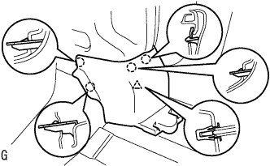

スピードセンサ RR LH（4WD） 取り外し |
| 1. バッテリマイナスターミナル切り離し |
参照| 2. ラゲージルームボックス リッド取りはずし |
ラゲージルームボックスリッドを取りはずす。
| 3. ラゲージコンパートメント トレイ取りはずし |
トランク(ラゲージコンパートメント)トレイを取りはずす。
| 4. トランク(ラゲージコンパートメント) サイドトレイ取りはずし |
トランク(ラゲージコンパートメント)サイドトレイを取りはずす。
| 5. リヤシートバツクASSY取りはずし |
 |
リヤシートバックを前倒位置にする。
クリップリムーバーを使用して、クリップ2個をはずす。
 |
リヤシートバックカバーをめくる。
ボルト2本をはずし、リヤシートバックASSYを取りはずす。
| 6. リヤシートクッションASSY取りはずし |
 |
クリップのレバーを図の方向に押して、リヤシートクッションASSYの前端部を持ち上げ、クリップのかん合をはずす。
フックのかん合をはずす。
シートベルトをはずし、リヤシートクッションASSYを取りはずす。
| 7. フロントドアスカッフ プレート LH取りはずし |
 |
手で上方に引いて車両後方からツメのかん合をはずし、フロントドアスカッフプレートLHを取りはずす。
| 8. デッキサイドトリム カバー FR LH取りはずし |
|  |
手で車両前方に引いてツメのかん合をはずし、デッキサイドトリムカバーFR LHを取りはずす。
| 9. リヤドア オープニングトリム ウェザストリップ LH切り離し |
| 10. バックドア ウエザストリップ切り離し |
| 11. バックドアスカッフ プレート取りはずし |
 |
クリップリムーバーを使用して、クリップ2個を取りはずす。
トリムカバー端部より手で上方に引き、クリップのかん合をはずしてバックドアスカッフプレートを取りはずす。
| 12. リヤシート3ポイントタイプ ベルトASSY OUT LH取りはずし（フロアアンカ部） |
ボルトをはずし、リヤシート 3ポイントタイプ ベルトASSY OUT LH（フロアアンカ部）を取りはずす。
| 13. リヤシートバック ヒンジSUB-ASSY LH取りはずし |
ボルトをはずし、リヤシートバックヒンジLHを取りはずす。
| 14. デッキトリムサイド パネルASSY LH取りはずし |
 |
サイドボードを手で車両内側方向に引き、クリップおよびツメのかん合をはずし、デッキトリムサイドパネルASSY LHを取りはずす。
| 15. リヤタイヤ取りはずし |
| 16. スピードセンサ RR LH取りはずし |
 |
スピードセンサRR LHのコネクターを切り離し、グロメットのかん合をはずす。
 |
ボルト2本をはずし、スピードセンサワイヤをボデーから切り離す。
 |
ボルトをはずし、スピードセンサRR LHをリヤアクスルハウジングから取りはずす。